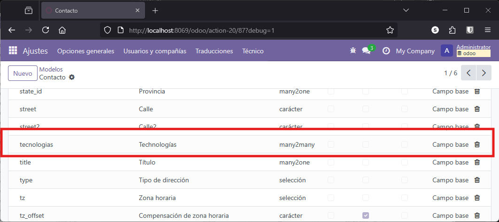
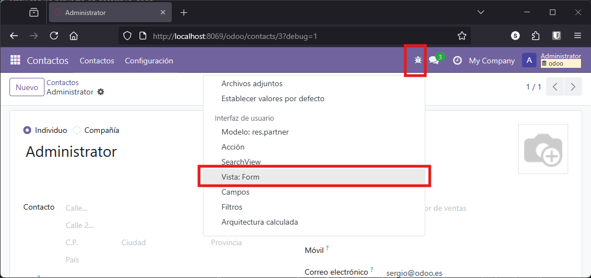
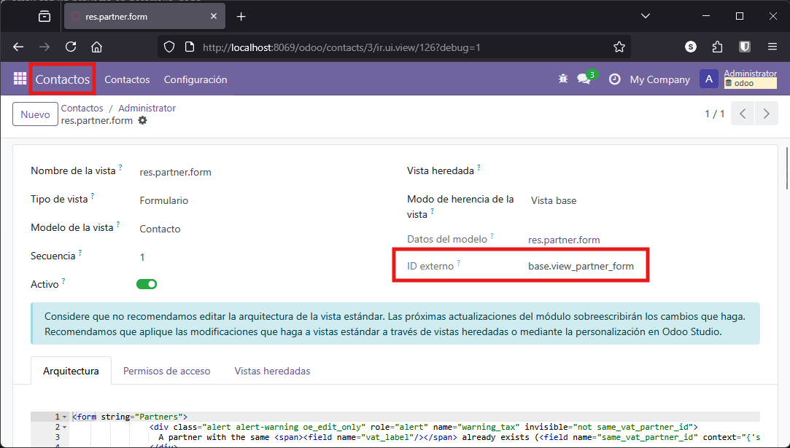
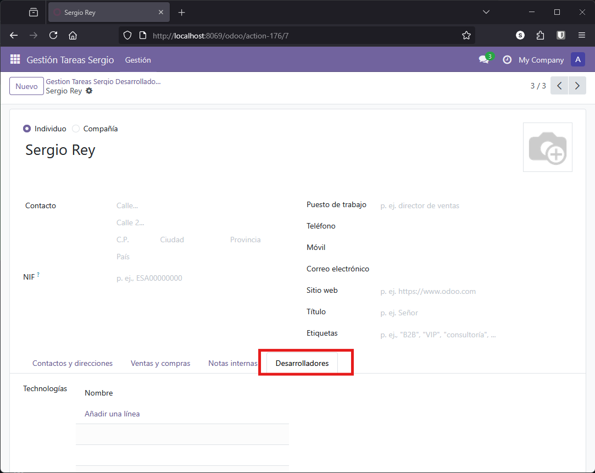

Herencias
La herencia es uno de los mecanismos más potentes de Odoo para extender funcionalidad existente sin modificar el código original. Permite reutilizar y adaptar modelos, vistas y lógica de negocio de módulos estándar, facilitando la evolución y el mantenimiento de las aplicaciones desarrolladas sobre la plataforma.
En este apartado veremos los principales tipos de herencia disponibles en Odoo y trabajaremos un ejemplo práctico completo de herencia de clase, extendiendo el modelo de contactos para gestionar desarrolladores en nuestro sistema de proyectos.
Tipos de Herencia en Odoo
Según la documentación oficial de Odoo, existen varios tipos de herencia:
Herencia de clase (clásica)
Permite extender un modelo existente añadiendo nuevos campos o métodos, o sobrescribiendo los ya existentes. Los datos se almacenan en la misma tabla que el modelo original, y las vistas existentes pueden mostrar los nuevos campos añadidos. Es el tipo de herencia más utilizado en Odoo.
Herencia por prototipo
Se crea un nuevo modelo que hereda los atributos del modelo original, pero los datos se almacenan en tablas diferentes. Este tipo de herencia es útil cuando se requiere crear variantes de un modelo base, manteniendo la independencia de los datos.
Herencia por delegación
Se crea un nuevo modelo que contiene una relación con el modelo original. Cada vez que se crea un registro en el modelo hijo, se crea también un registro asociado en el modelo padre, sincronizando los datos entre ambos. Este enfoque permite implementar herencia múltiple y mantener la separación de datos en tablas distintas.

En Odoo, la herencia de clase es la más utilizada, ya que permite ampliar o adaptar modelos existentes a nuevas necesidades sin duplicar información ni perder compatibilidad con las vistas y funcionalidades ya implementadas.
Situación Actual en los Modelos del Proyecto
Actualmente, el módulo de gestión de proyectos cuenta con los siguientes modelos:
- Proyecto: Representa un proyecto y está relacionado con varias historias
- Historia: Cada historia puede contener varias tareas
- Tarea: Las tareas están asociadas a las tecnologías necesarias para su desarrollo, pertenecen a una historia y se desarrollan en un sprint
- Sprint: Relacionado con las tareas que se desarrollan durante el mismo
- Tecnología: Representa las tecnologías empleadas en las distintas tareas
Elemento faltante: Hasta el momento, no se ha implementado ningún modelo para representar a las personas involucradas en el desarrollo (desarrolladores) ni a los clientes relacionados con los proyectos. Es momento de abordar este aspecto, pero ayudándonos de la herencia.
Herencia de Clase en Odoo
Odoo incluye un modelo nativo llamado res.partner que almacena todos los contactos del sistema: empleados, compañías, clientes, proveedores, etc. Crear un modelo completamente nuevo para desarrolladores no tiene sentido, ya que un desarrollador es, en esencia, un tipo de contacto.
La solución óptima es extender el modelo res.partner mediante herencia de clase, añadiendo los campos y funcionalidades específicas que necesitamos para gestionar desarrolladores.
Implementación del Modelo
Para crear un modelo que represente a los desarrolladores y permita asociarles tecnologías, se define una clase que hereda de res.partner utilizando el atributo _inherit. De este modo, cualquier campo añadido en la nueva clase se incorporará directamente a la tabla de res.partner.
Por ejemplo, para asociar tecnologías a los desarrolladores, se añade un campo Many2many relacionado con el modelo de tecnologías:
# DESARROLLADORES
class desarrollador(models.Model):
_name = 'res.partner'
_inherit = 'res.partner'
tecnologias = fields.Many2many(
'gestion_tareas_sergio.tecnologias_sergio',
relation='relacion_desarrollador_technologies',
column1='rel_desarrollador',
column2='rel_tecnologias',
string='Tecnologías'
)
Aspectos clave de la implementación:
_name: No es imprescindible especificarlo al heredar, pero es común incluirlo por claridad y hábito_inherit: Fundamental, indica el modelo del que heredamos (res.partner)tecnologias: Nuevo campo Many2many que se añade al modelo heredado
Con esta implementación, no se crea una nueva tabla para desarrolladores. El campo tecnologias se añade directamente a la tabla res_partner existente.
Verificación en Base de Datos
Tras actualizar el módulo, podemos verificar que el nuevo campo se ha añadido correctamente al modelo res.partner. Usa cualquiera de los métodos descritos en el apartado Revisión de la base de datos del primer ejemplo.
Desde el entorno de Odoo en modo desarrollo, ve a Ajustes → Técnico → Estructura de la base de datos → Modelos y busca res.partner. Si buscas desarrollador no lo encontrarás, ya que no es un modelo independiente.
{kind=link}

El modelo res.partner contiene muchos campos adicionales de diferentes módulos instalados. Esto es precisamente la potencia de la herencia: múltiples módulos pueden extender el mismo modelo sin interferir entre sí.
Acceso Mediante Menú
Para facilitar el acceso a los desarrolladores desde nuestro módulo, creamos una acción y una opción de menú que apunten al modelo res.partner:
views.xml
<!-- Nueva acción -->
<record model="ir.actions.act_window" id="gestion_tareas_sergio.action_desarrolladores">
<field name="name">Gestión Tareas Sergio Desarrolladores</field>
<field name="res_model">res.partner</field>
<field name="view_mode">list,form</field>
</record>
<!-- Nuevo menú -->
<menuitem name="Desarrolladores"
id="gestion_tareas_sergio.gestion_desarrolladores"
parent="gestion_tareas_sergio.gestion"
action="gestion_tareas_sergio.action_desarrolladores"/>
Con esta configuración básica, al acceder al menú "Desarrolladores" veremos todos los contactos del sistema, no solo los desarrolladores. Necesitamos personalizar las vistas y añadir filtros para mostrar únicamente los contactos que nos interesan.
Herencia y Modificación de Vistas
Para visualizar correctamente los desarrolladores, debemos heredar y modificar las vistas existentes del modelo res.partner. Esto nos permite añadir nuestros campos personalizados sin crear vistas desde cero.
Heredar el Formulario de Contactos
Vamos a heredar el formulario de res.partner y añadir una nueva pestaña para mostrar el campo de tecnologías. Usaremos mode="primary" para crear una vista alternativa sin sobrescribir la original.
La localización de elementos dentro de la vista se realiza mediante expresiones XPath, que permiten ubicar el punto exacto donde insertar nuevos campos. Por ejemplo, para añadir una nueva pestaña después de la última existente, localizamos la página con nombre internal_notes y añadimos una nueva página a continuación.
Antes de escribir el código, necesitamos saber el nombre exacto de la vista a heredar. En modo desarrollador, accede al formulario estándar de contactos y consulta la información de la vista:
{kind=link}

En la información de la vista encontrarás el ID externo, que es el identificador que necesitamos para heredar:
{kind=link}

Ahora ya podemos escribir nuestra vista heredada:
<record model="ir.ui.view" id="desarrolladores_form">
<field name="name">gestion_tareas_sergio.Desarrolladores</field>
<field name="model">res.partner</field>
<field name="inherit_id" ref="base.view_partner_form"/>
<field name="mode">primary</field>
<field name="arch" type="xml">
<xpath expr="//sheet/notebook/page[@name='internal_notes']" position="after">
<page name="desarrolladores" string="Desarrolladores">
<group>
<group>
<field name="tecnologias"/>
</group>
</group>
</page>
</xpath>
</field>
</record>
Elementos clave del código:
inherit_id: Referencia la vista base que vamos a extender (base.view_partner_form)mode="primary": Indica que es una vista alternativa, no una modificación de la originalxpath: Expresión XPath que localiza dónde insertar nuestro contenidoposition="after": Añade nuestra pestaña después del elemento localizado
La expresión XPath //sheet/notebook/page[@name='internal_notes'] busca la pestaña de notas internas y nuestra nueva pestaña se añadirá justo después de ella.
{kind=link}

Configurar las Acciones de Vista
Para que al acceder desde nuestro menú se muestre la vista personalizada, debemos especificar qué vistas usar tanto para el listado como para el formulario:
<!-- Acción principal desarrolladores -->
<record model="ir.actions.act_window" id="gestion_tareas_sergio.action_desarrolladores">
<field name="name">Gestión Tareas Sergio Desarrolladores</field>
<field name="res_model">res.partner</field>
<field name="view_mode">list,form</field>
</record>
<!-- Vista de lista específica -->
<record model="ir.actions.act_window.view" id="gestion_tareas_sergio.action_desarrolladores_list">
<field name="sequence" eval="1"/>
<field name="view_mode">list</field>
<field name="view_id" ref="base.view_partner_tree"/>
<field name="act_window_id" ref="gestion_tareas_sergio.action_desarrolladores"/>
</record>
<!-- Vista de formulario específica -->
<record model="ir.actions.act_window.view" id="gestion_tareas_sergio.action_desarrolladores_form">
<field name="sequence" eval="2"/>
<field name="view_mode">form</field>
<field name="view_id" ref="desarrolladores_form"/>
<field name="act_window_id" ref="gestion_tareas_sergio.action_desarrolladores"/>
</record>
Explicación de los bloques:
El primer bloque es la acción genérica que ya teníamos, define el acceso básico al modelo.
El segundo bloque configura la vista de lista:
sequence: Orden de aplicación (1 = primero)view_mode: Tipo de vista (list)view_id: Referencia a la vista de árbol estándar de contactosact_window_id: Enlace con la acción principal
El tercer bloque configura la vista de formulario:
sequence: Orden de aplicación (2 = segundo)view_mode: Tipo de vista (form)view_id: Referencia a nuestra vista personalizadadesarrolladores_formact_window_id: Enlace con la acción principal
Con esta configuración, al acceder desde nuestro menú de desarrolladores, se mostrará la vista personalizada que hemos creado.
Filtrado de Registros: Solo Desarrolladores
Actualmente, al acceder al menú de desarrolladores vemos todos los contactos del sistema. Necesitamos una forma de identificar y filtrar únicamente los contactos que son desarrolladores.
Campo Identificador de Desarrolladores
Para distinguir los desarrolladores del resto de contactos, añadimos un campo booleano es_desarrollador al modelo heredado:
models.py - desarrollador
# DESARROLLADORES
class desarrollador(models.Model):
_name = 'res.partner'
_inherit = 'res.partner'
es_desarrollador = fields.Boolean(string='Desarrollador')
tecnologias = fields.Many2many(
'gestion_tareas_sergio.tecnologias_sergio',
relation='relacion_desarrollador_technologies',
column1='rel_desarrollador',
column2='rel_tecnologias',
string='Tecnologías'
)
Ahora modificamos la vista para mostrar este campo en la pestaña de desarrolladores:
views.xml
<record model="ir.ui.view" id="desarrolladores_form">
<field name="name">gestion_tareas_sergio.Desarrolladores</field>
<field name="model">res.partner</field>
<field name="inherit_id" ref="base.view_partner_form"/>
<field name="mode">primary</field>
<field name="arch" type="xml">
<xpath expr="//sheet/notebook/page[@name='internal_notes']" position="after">
<page name="desarrolladores" string="Desarrolladores">
<group>
<group>
<field name="es_desarrollador"/>
<field name="tecnologias"/>
</group>
</group>
</page>
</xpath>
</field>
</record>
Filtrado en la Acción
Para mostrar únicamente los desarrolladores en nuestro menú, utilizamos dos atributos en la acción:
Domain: Filtra los registros mostrados
Context: Establece valores por defecto al crear nuevos registros
<record model="ir.actions.act_window" id="gestion_tareas_sergio.action_desarrolladores">
<field name="name">Gestión Tareas Sergio Desarrolladores</field>
<field name="res_model">res.partner</field>
<field name="view_mode">list,form</field>
<field name="domain">[('es_desarrollador', '=', True)]</field>
<field name="context">{'default_es_desarrollador': True}</field>
</record>
Detalles importantes de la sintaxis:
domain: Utiliza sintaxis de dominio de Odoo (lista de tuplas). El filtro[('es_desarrollador', '=', True)]se evalúa en Python para mostrar solo registros donde este campo sea verdaderocontext: Es un diccionario que se pasa al cliente web. El prefijodefault_seguido del nombre del campo establece su valor por defecto al crear nuevos registros
Con estos cambios:
- El listado mostrará únicamente desarrolladores
- Al crear un nuevo desarrollador, el campo
es_desarrolladorestará activado automáticamente
Visibilidad Condicional de la Pestaña
Para que la pestaña de desarrollador solo sea visible cuando un contacto tiene marcado el campo es_desarrollador, utilizamos el atributo modifiers:
<record model="ir.ui.view" id="desarrolladores_form">
<field name="name">gestion_tareas_sergio.Desarrolladores</field>
<field name="model">res.partner</field>
<field name="inherit_id" ref="base.view_partner_form"/>
<field name="mode">primary</field>
<field name="arch" type="xml">
<xpath expr="//sheet/notebook/page[@name='internal_notes']" position="after">
<page name="desarrolladores"
string="Desarrolladores"
modifiers="{'invisible':[('es_desarrollador', '=', False)]}">
<group>
<group>
<field name="es_desarrollador"/>
<field name="tecnologias"/>
</group>
</group>
</page>
</xpath>
</field>
</record>
El atributo modifiers utiliza una sintaxis similar al domain, definiendo condiciones que se evalúan en Python. En este caso, la pestaña será invisible cuando es_desarrollador sea False.
Cambio de attrs a modifiers en Odoo 18
Odoo 18 ha cambiado la forma de identificar los atributos de una vista, pasando de attrs a modifiers. Si encuentras código con attrs en versiones anteriores, debes actualizarlo a modifiers para la versión 18.
Este último paso garantiza que la pestaña solo se muestre para contactos que sean desarrolladores, mejorando la experiencia de usuario y evitando confusiones.
Relación Entre Tareas y Desarrolladores
Ahora que tenemos desarrolladores en nuestro sistema, estableceremos la relación lógica entre tareas y desarrolladores. Cada tarea será realizada por un desarrollador, y cada desarrollador podrá tener múltiples tareas asignadas.
Añadir Relación Many2one en Tareas
Añadimos un campo de relación Many2one en el modelo de tareas para asociar cada tarea a un desarrollador:
class tareas_sergio(models.Model):
_name = 'gestion_tareas_sergio.tareas_sergio'
# ... campos existentes ...
desarrollador_mo = fields.Many2one('res.partner', string='Desarrollador')
Dado que los desarrolladores son contactos (res.partner), la relación se establece directamente con este modelo.
Actualizar Vista de Tareas
Añadimos el nuevo campo en la vista de formulario de tareas:
views.xml
<record model="ir.ui.view" id="tareas_form">
<field name="name">gestion_tareas_sergio.tareas_sergio.form</field>
<field name="model">gestion_tareas_sergio.tareas_sergio</field>
<field name="arch" type="xml">
<form>
<sheet>
<group>
<!-- campos existentes -->
<field name="desarrollador_mo"/>
</group>
</sheet>
</form>
</field>
</record>
Si pruebas ahora la aplicación, verás que el campo funciona correctamente mostrando un desplegable con todos los contactos. Sin embargo, esto no es óptimo: deberíamos mostrar únicamente los contactos que son desarrolladores.
Filtrar Solo Desarrolladores
Para que el campo muestre únicamente desarrolladores y además use nuestra vista personalizada al acceder al formulario, aplicamos domain y context:
<record model="ir.ui.view" id="tareas_form">
<field name="name">gestion_tareas_sergio.tareas_sergio.form</field>
<field name="model">gestion_tareas_sergio.tareas_sergio</field>
<field name="arch" type="xml">
<form>
<sheet>
<group>
<!-- campos existentes -->
<field name="desarrollador_mo"
domain="[('es_desarrollador', '=', True)]"
context="{'form_view_ref': 'desarrolladores_form'}"/>
</group>
</sheet>
</form>
</field>
</record>
Mejoras aplicadas:
domain: Filtra el desplegable para mostrar solo contactos cones_desarrollador = Truecontext: Especifica que al abrir el formulario desde este campo, se use la vistadesarrolladores_form
Ocultar Campo es_desarrollador
Una mejora adicional es hacer que el campo es_desarrollador no sea modificable desde el formulario. Si un usuario desmarca este campo, la pestaña desaparecerá automáticamente al dejar de ser desarrollador, lo cual puede resultar confuso.
Podemos hacer el campo invisible:
<record model="ir.ui.view" id="desarrolladores_form">
<field name="name">gestion_tareas_sergio.Desarrolladores</field>
<field name="model">res.partner</field>
<field name="inherit_id" ref="base.view_partner_form"/>
<field name="mode">primary</field>
<field name="arch" type="xml">
<xpath expr="//sheet/notebook/page[@name='internal_notes']" position="after">
<page name="desarrolladores"
string="Desarrolladores"
modifiers="{'invisible':[('es_desarrollador', '=', False)]}">
<group>
<group>
<!-- Opción 1: Solo lectura -->
<!-- <field name="es_desarrollador" readonly="1"/> -->
<!-- Opción 2: Invisible (recomendado) -->
<field name="es_desarrollador" invisible="1"/>
<field name="tecnologias"/>
</group>
</group>
</page>
</xpath>
</field>
</record>
La opción invisible="1" evita que el usuario pueda modificar el campo accidentalmente, manteniendo la coherencia del formulario.
Asignación Automática de Categoría
Como funcionalidad adicional, vamos a asignar automáticamente la etiqueta "Desarrollador" cuando marquemos un contacto como desarrollador. Las etiquetas (tags) son categorías predefinidas en Odoo que permiten clasificar contactos.
Esto se implementa mediante un método decorado con @api.onchange, que se ejecuta automáticamente cuando el usuario modifica el campo es_desarrollador:
class desarrollador(models.Model):
_name = 'res.partner'
_inherit = 'res.partner'
es_desarrollador = fields.Boolean(string='Desarrollador')
tecnologias = fields.Many2many(
'gestion_tareas_sergio.tecnologias_sergio',
relation='relacion_desarrollador_technologies',
column1='rel_desarrollador',
column2='rel_tecnologias',
string='Tecnologías'
)
@api.onchange('es_desarrollador')
def _onchange_es_desarrollador(self):
# Buscar la categoría "Desarrollador"
categorias = self.env['res.partner.category'].search([('name', '=', 'Desarrollador')])
if len(categorias) > 0:
# Si existe, usar la primera encontrada
category = categorias[0]
else:
# Si no existe, crearla
category = self.env['res.partner.category'].create({'name': 'Desarrollador'})
# Asignar la categoría al contacto
self.category_id = [(4, category.id)]
Explicación del código:
@api.onchange('es_desarrollador'): Ejecuta el método cada vez que cambia el campoself.env['res.partner.category']: Accede al modelo de categorías de contactossearch([('name', '=', 'Desarrollador')]): Busca una categoría con ese nombrecreate({'name': 'Desarrollador'}): Crea la categoría si no existe[(4, category.id)]: Sintaxis de Odoo para añadir un registro a una relación Many2many sin eliminar los existentes
Con esta implementación, al marcar un contacto como desarrollador, automáticamente se le asigna la etiqueta correspondiente, facilitando su identificación y clasificación en el sistema.
🧩 Tu Turno: Gestor de Restaurante
Ahora aplicarás la herencia de modelos y vistas en tu proyecto del restaurante.
Objetivos y Contexto
Vas a extender el modelo res.partner de Odoo para gestionar Camareros en tu restaurante. Los camareros son contactos del sistema con información específica adicional: turno de trabajo, sección asignada y menús que pueden recomendar.
Pasos a Realizar
-
Crear modelo Camarero heredando de res.partner
Crea una clase que herede de
res.partnercon campos específicos para camareros.Campos a añadir:
es_camarero: Boolean para identificar camarerosturno: Selection con opciones ('mañana', 'tarde', 'noche')seccion: Char para la zona asignada (terraza, sala, bar, etc.)menus_especialidad: Many2many con tus menús
-
Crear vista heredada del formulario de contactos
Hereda
base.view_partner_formy añade una pestaña "Camarero" con los campos específicos.Pistas:
- Averigua el ID de la vista base desde modo desarrollador
- Usa XPath para localizar donde insertar la pestaña
- Usa
mode="primary"para vista alternativa
-
Configurar acciones y menús
Crea acción y menú para acceder a camareros, configurando vistas específicas de lista y formulario.
Pistas:
- Acción principal con
res.partner - Dos acciones de vista: una para list, otra para form
- Menú que use la acción principal
- Acción principal con
-
Filtrar solo camareros
Añade
domainycontexta la acción para mostrar y crear solo camareros.Sintaxis del filtro:
[('es_camarero', '=', True)] -
Hacer pestaña visible solo para camareros
Usa
modifiersen la pestaña para ocultarla cuando no sea camarero. -
Ocultar campo es_camarero en formulario
Haz el campo invisible para evitar que se modifique accidentalmente.
-
Relación con Pedidos o Mesas (opcional)
Si tienes modelo de Pedidos/Mesas, añade campo Many2one a
res.partnery filtra solo camareros. -
Asignación automática de categoría (avanzado)
Implementa
@api.onchangepara asignar etiqueta "Camarero" automáticamente.
Verificaciones
Comprueba que:
- Aparece menú "Camareros" en tu aplicación
- Solo se muestran contactos marcados como camareros
- Al crear camarero, el campo
es_camareroestá marcado por defecto - La pestaña "Camarero" aparece solo en camareros
- Puedes asignar turno, sección y menús de especialidad
- Si implementaste Pedidos, solo aparecen camareros en el desplegable
Datos de Prueba
Camarero 1: Juan López - Turno: Mañana, Sección: Terraza
Camarero 2: María García - Turno: Tarde, Sección: Sala Principal
Camarero 3: Pedro Martínez - Turno: Noche, Sección: Bar
Contacto Normal: Cliente Prueba - NO camarero (verificar que no aparece la pestaña)